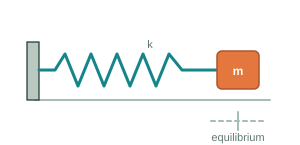
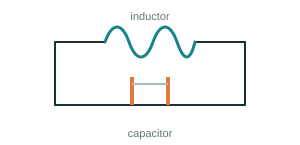
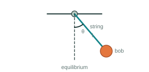

Question 1
Make the spring stiffer
Keep the mass the same and increase k. What happens to the oscillation?
T = 2π√(m/k)
Larger k → smaller T → faster oscillation
A spring pulls a displaced block back toward equilibrium. But momentum carries it past. What kind of equation can describe the motion that follows?
Pull the block to the right and release it. What happens next?
At x = 0, the spring is neither stretched nor compressed, so there is no horizontal spring force.
Pull the block to the right and release it. The stretched spring pulls it toward equilibrium. As the block gets closer, the spring force becomes smaller.
At equilibrium the spring force becomes zero. But the block does not stop. It already has momentum, so it continues past equilibrium.
The spring now compresses and pushes the block in the opposite direction. The block slows, stops for an instant, and then moves back toward equilibrium. The process repeats.
The spring keeps pulling or pushing the block toward equilibrium, while the block's momentum carries it past equilibrium.
This back-and-forth motion is called oscillation.
Look at the block at some position x to the right of equilibrium. The spring is stretched, so it pulls the block toward equilibrium.
For an ideal spring, Hooke's law gives:
The negative sign means the force acts opposite to the displacement — always toward equilibrium.
Newton's second law gives F = ma. Since the spring is the only horizontal force:
The position of the block determines its acceleration.
At equilibrium, x = 0 and therefore a = 0. But zero acceleration does not mean zero velocity; the block can pass through equilibrium with momentum.
Velocity is the rate of change of position:
Acceleration is the rate of change of velocity, so:
Substitute this into the relationship from Newton's law:
The highest derivative is the second derivative, so this is a second-order differential equation.
The order of a differential equation is determined by the highest derivative that appears in it.
But the equation alone does not tell us the exact future unless we know the initial state. At the same position, the block could be moving toward equilibrium, moving away, or momentarily at rest.
We therefore need:
For this second-order system, knowing where the block starts is not enough. We also need to know how it is moving.
Release the block from the right extreme. Its displacement is maximum, velocity is zero, and acceleration toward equilibrium is maximum. As it approaches equilibrium, force and acceleration decrease.
At equilibrium, acceleration is zero but speed is maximum. Momentum carries the block through. On the other side the spring slows it until the velocity becomes zero at the opposite extreme, then reverses the motion.
With no friction or resistance, nothing gradually removes energy, so the motion repeats.
From the physics alone, we can predict that the displacement should vary repeatedly between two extremes.
Straight segments would mean constant velocity and zero acceleration between corners. Sharp corners would require the velocity to reverse abruptly. But a = −(k/m)x changes continuously with position, so the motion must be smooth.
Now let's see what the differential equation predicts.
We need a function whose second derivative has the same shape as the original function, but with the opposite sign. Consider:
Differentiating twice:
Comparing with the spring-mass equation:
We pulled the block to x = A and released it from rest:
The cosine solution satisfies both, so:
The displacement varies sinusoidally with time.
A is the maximum displacement from equilibrium. It changes how far the block travels, but it does not appear in ω.
Pulling the block farther changes the amplitude, but not how quickly it oscillates.
Increasing k increases ω. A stiffer spring produces a stronger restoring force for the same displacement.
Increasing m decreases ω. The same spring has to accelerate a larger mass.
The block moves back and forth along a straight line. If we continuously record its position as time moves forward, the familiar wave appears.
Ready at t = 0, x = +A
The wave is simply a record of the block's position as time passes.
Before calculating, try to predict.
Keep the mass the same and increase k. What happens to the oscillation?
Larger k → smaller T → faster oscillation
Keep the spring the same and increase m. What happens to the oscillation?
Larger m → larger T → slower oscillation
We discovered second-order behavior using a mass and a spring. But the same mathematical structure appears in very different physical systems.


Electrical energy moves back and forth between the capacitor and inductor.

Once we recognize that structure, understanding one system can help us understand many others.
We started with a block and a spring. From the forces acting on it, we discovered a second-order differential equation. That equation predicted something remarkable: a motion that repeats itself.
But why do systems oscillate? And what determines the rhythm of that motion?
Next: Oscillations